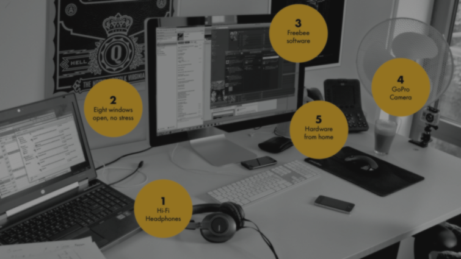
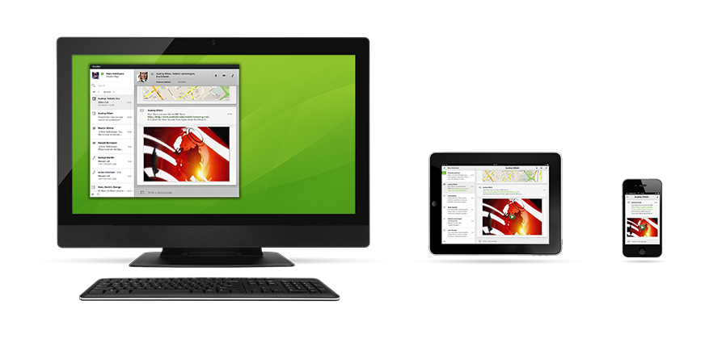
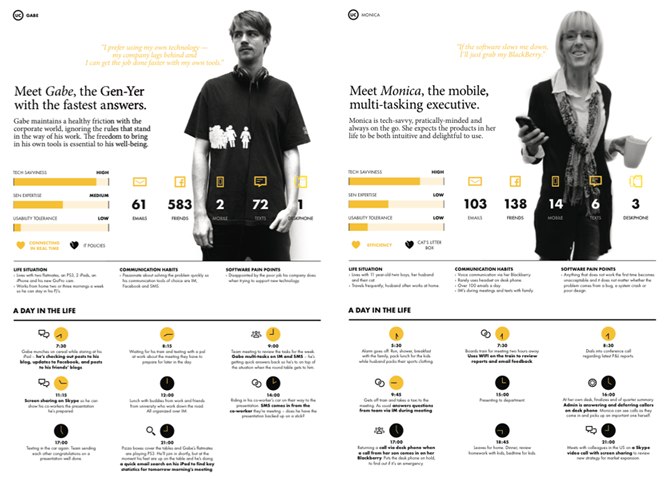

objectives
to create a one-stop platform for individuals and teams to go beyond communication but also collaborate and keep the conversation going around your project going.
project ansible will empower team to focus on what matters in a more sensible way through seamless platform integration on any touch points.
In short, project ansible is a secure communications platform that pulls together and manages your daily flow of communications into rich and meaningful conversations. Upon release, Siemens Enterprise COmmunications deployed project ansible as independent product called Unify.
role + responsibilities
ux lead
- facilitate ideation and workshop session and client-related meetings/presentations, including stakeholders interviews and insights gathering
- led team of iXD and visual designers, technologists and program manager
project deliverables wireframes, information architecture and interactive prototype (BETA) to be deployed across desktop and mobile OS with canned data and simulated activity to project real-world use case.

- snapshot of user personas

client siemens enterprise communications | germany
process
agile-led project management environment with daily stand-up and check out attended by the whole team; each stand up lasts no more than 10 minutes that highlights progress, status and identifying any potential road blocks from each team member.
tools
axure, raphael.js, ms suites, confluence, jira project management tool, and adobe creative suites (inDesign, illustrator, photoshop, after f/x).
. . . . .
#frogDesign, #germany, #IA, #Wires, #HeroWorkflows, #UserStories, #CustomerJourney, #UsabilityTesting, #InteractivePrototype
. . . . .